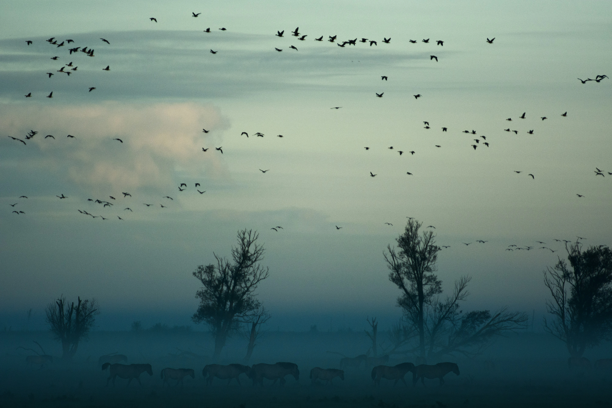
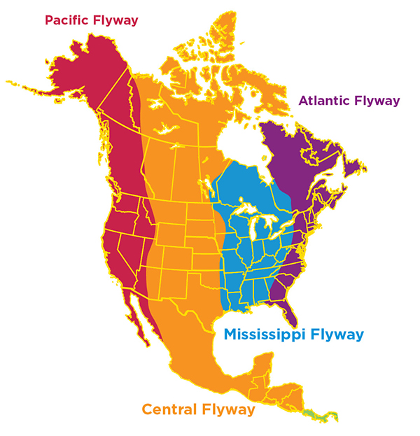
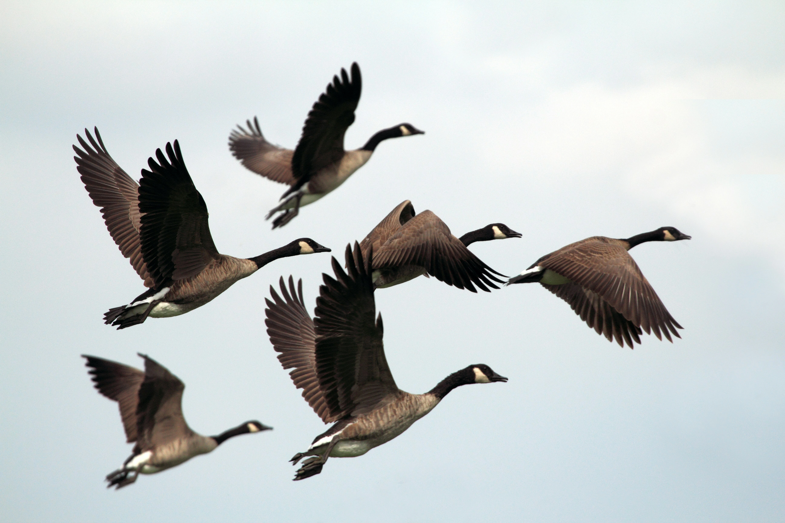

Spring Migration
Birds travel north to breeding areas.

Explore migration routes, species profiles, and the weather patterns that guide birds across continents.
Bird migration is the seasonal movement of birds between breeding and wintering grounds. Millions of birds travel thousands of miles every year.
Birds travel north to breeding areas.
Birds move south to warmer climates.

Eastern North American route used by millions of migratory birds each year.

Western migration route extending from Alaska to South America.
Habitat protection helps migratory birds complete their journeys safely.